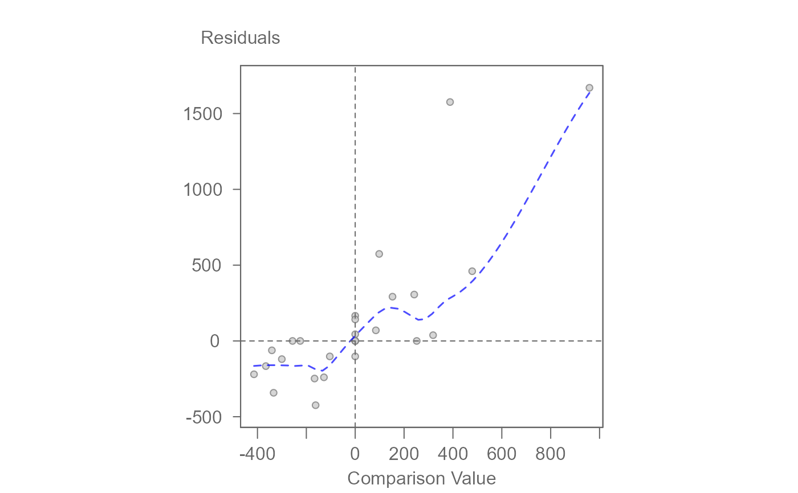
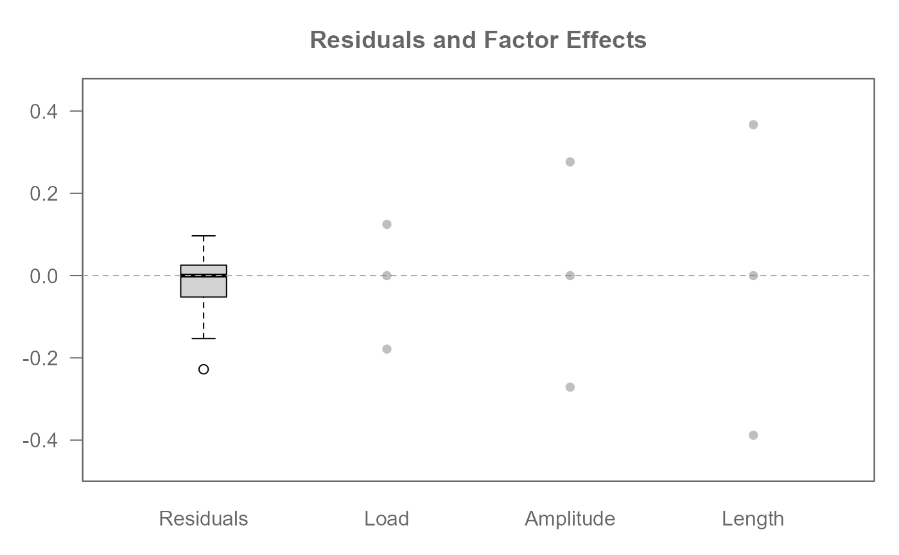
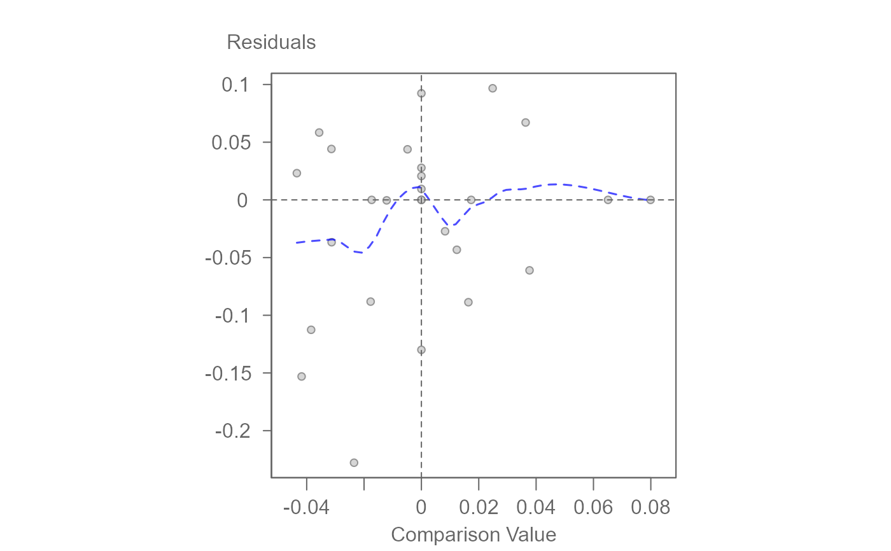
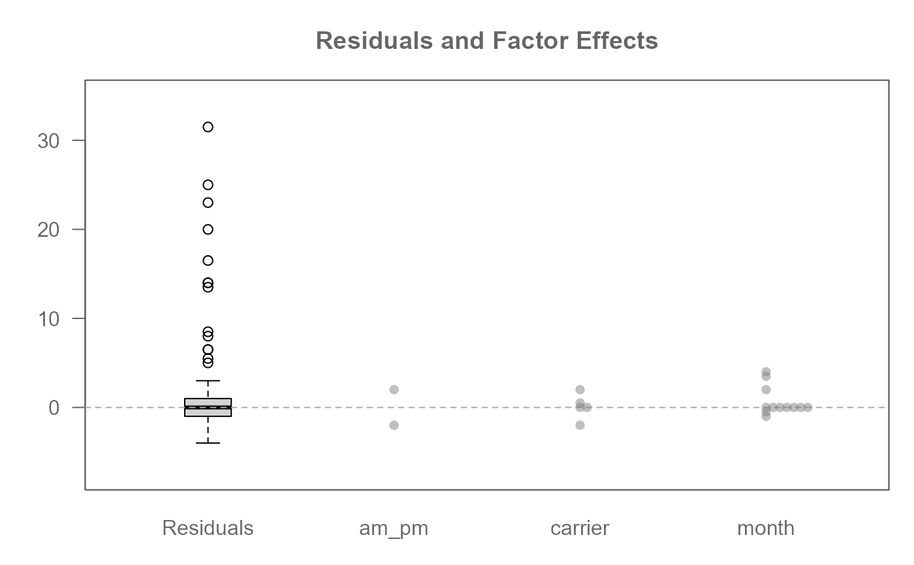
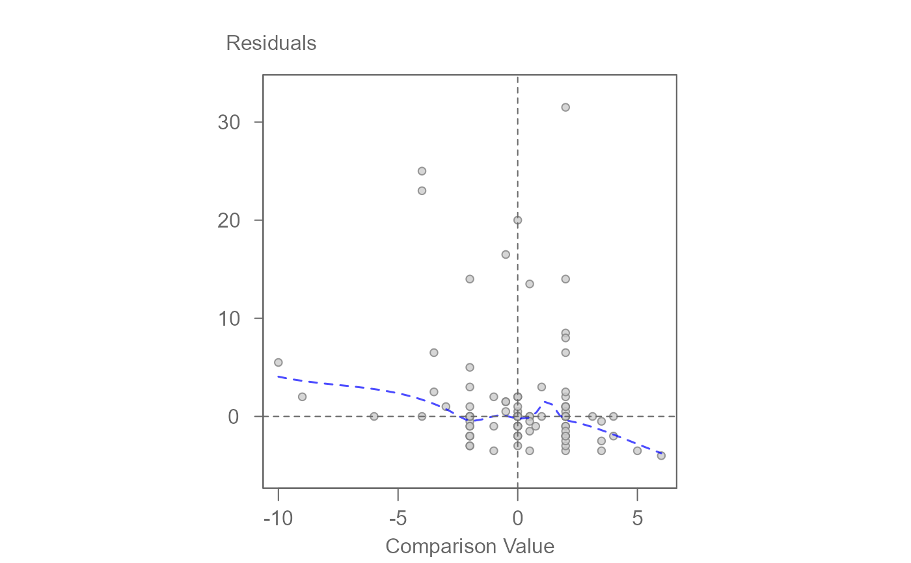

Apply median polish to a multi-way table
Usage
eda_npol(
dat,
response,
...,
maxiter = 20,
tolerance = 1e-06,
stat = median,
p = 1,
tukey = FALSE,
base = exp(1)
)Arguments
- dat
A data frame in long form containing the response and factor variables.
- response
The response variable (must be numeric).
- ...
Unquoted factor variable names.
- maxiter
Maximum number of iterations for the median polish algorithm.
- tolerance
Convergence threshold for median polish adjustments.
- stat
Location statistic to use. Defaults to
median.- p
Re-expression power parameter.
- tukey
Boolean determining if Tukey's power transformation should be used. If
FALSE(the default), the Box-Cox transformation is adopted.- base
Base used with the
log()function ifp = 0.
Value
A list of class eda_npol containing:
- global
The estimated common (global) effect.
- response
Response column name from dataframe input.
- effects
A named list of main effects.
- long
A dataframe of estimated factor values, residuals, comparison values (cv) and fitted values.
- converged
Boolean indicating if convergence was reached.
- iter
The number of iterations performed.
- fitted_values
The fitted values (sum of common effect and factor effects) for the observed data points.
- power
The power transformation applied (if any).
Details
This function applies the median polish algorithm to a dataset containing a
response variable and multiple factor variables. It iteratively adjusts
factor effects to reveal common patterns in the data. It estimates the
common effect, factor effects, and residuals.
The function does not accept tables with replicates (i.e. where each combination
of factor level may have more than one response variable). If the data contains
replicates, the values should be summarized for each combination of factor
levels prior to running eda_npol.
Note on missing combinations: Median polish can proceed with incomplete
data tables by operating on available values. This function
includes a check to warn the user if some combinations of factor levels
are not present in the input data. The polishing algorithm
handles these missing combinations by only using the data that are provided.
eda_npol iterates through each factor within a single polish step, removing
medians from residuals for each level of that factor, and centering the
factor's effects by removing their median (the median-of-medians extracted
from the residuals for that factor), which is then added to the common effect.
This differs from eda_pol's implementation where the centering of
row and column effects, and adding to the global effect, happens after the
medians for the current factor have been removed from the residuals. This
explains the slight differences in output between the two. Neither approach
is better than the other, but if the dataset is a two-way table, it is
recommended to use the eda_pol function given its richer set of
features.
If the algorithm does not converge within maxiter, a warning is issued.
References
Hoaglin, David C. and Mosteller, Frederick and Tukey, John W. (1985). Exploring data tables, trends, and shapes.
Tukey, John W. (1977). Exploratory Data Analysis. Addison-Wesley.
Emerson, John D., and David C. Hoaglin. (1983). Understanding Robust and Exploratory Data Analysis. John Wiley & Sons.
Examples
# Example 1:
M0 <- eda_npol(yarn, Cycles, Load, Length, Amplitude)
# Extract global and factor effects from model
M0$global
#> [1] 620
M0$effects
#> $Load
#> 40 45 50
#> 358 0 -182
#>
#> $Length
#> 250 300 350
#> -520 0 552
#>
#> $Amplitude
#> 8 9 10
#> 436 0 -288
#>
# Visualize the data decomposition
plot(M0)
 # Generate a diagnostic plot (used to assess interaction effects)
plot(M0, plot = "diagnostic")
# Generate a diagnostic plot (used to assess interaction effects)
plot(M0, plot = "diagnostic")

# Re-express response variable by applying the log transformation
# Apply a base 10 log transformation
M1 <- eda_npol(yarn, Cycles, Load, Length, Amplitude, p = 0, base = 10)
plot(M1)

plot(M1, plot = "diagnostic")

# Example 2:
# Example of a 3-way table with missing values
# Note that the function returns a Warning with the number of
# missing combinations (e.g. 14 out of 120)
M0 <- eda_npol(logan, delay, am_pm, carrier, month, maxiter = 30)
#> Warning: Input data is incomplete. Missing values for 14 out of 120 possible combinations of factors. Analysis proceeds on available data.
plot(M0)

plot(M0, plot = "diagnostic")
